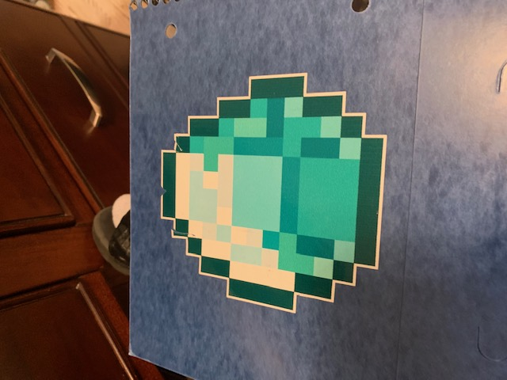
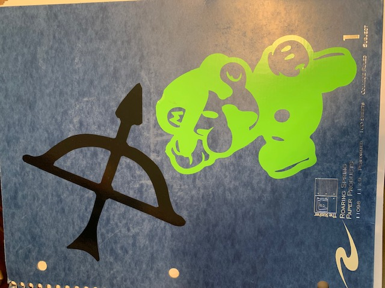

In this rotation, we had to make two stickers using the Roland 540i printer, two vinyl stickers using the Roland GS-24 CAMM 1, and a custom wax mold to make chocolates. The Roland 540i printer can print multiple colors in a single sticker while the Roland GS-24 CAMM 1 can only print in one color.
I first made the two stickers with the Roland 540i printer. I first searched the web for images to use then I imported them into CorelDRAW. Then I created boundaries around the images and made outside contour boxes. After I created the outside contour boxes, I had to change them from black to a specific pink color that the printer would recognize as the line to cut. I then exported the files as .eps files (Encapsulated PostScript) and I transported them to the printer. I imported my files, scaled them to my desired size, printed them, and stuck them into my notebook.
 Image 1: A picture of a Minecraft diamond that I made into a sticker.Second, I made two stickers with the Roland GS-24 CAMM 1 printer. To do this I had to first find two images from the web to turn into stickers. I then transported those images straight to the computer that is linked with the printer. On that computer, I turned the images into simple black-and-white outlines because the printer can only cut lines in the vinyl. I put pieces of vinyl into the printer, had the printer measure them, and scaled my outlines to fit within the margins. Finally I printed my stickers and peeled them out of the paper to stick into my notebook.
 Image 3: A picture of the two vinyl stickers that I made.Third, I created a wax mold in order to create custom chocolate snacks. I first had to turn an image into a .stl file in order to create a 3D mold. Once I did this, a piece of wax was milled out in the shape of the file by a specialized machine. Once the wax mold was ready, a food-friendly mold was poured in where the chocolate would eventually be poured. This substance is safe to eat food from, which is why it was used in this process. Once this new mold dried, I poured in some melted chocolate, waited a few minutes, and enjoyed my snack!
File of the image.